Интерфейс для системы контроля доступа и видеонаблюдения
Год¶
2021
Что сделано¶
Разработан новый интерфейс системы для управления доступом на предприятие.
Контекст¶
Я работала продуктовым дизайнером в компании, которая разрабатывала собственные цифровые решения и занималась их внедрением. Один из продуктов компании - система видеонаблюдения.
В компанию обратился клиент с задачей автоматизировать пропускной режим на своем предприятии.
Какие цели стояли: бесконтактный проход сотрудников через турникеты, бесконтактное измерение температуры, контроль рабочего времени, организация временных пропусков.
Глобально требовалось интегрировать систему видеонаблюдения, разработанную в компании, с существующей у клиента системой Sigur, настроить аутентификацию через Active Directory и доработать функциональность с формированием отчетов.
Старый интерфейс системы видеонаблюдения не предусматривал масштабируемость. И было принято решение полностью переработать интерфейс продукта.
Формат¶
Веб-сервис без верстки для мобильных устройств
Команда¶
- Дизайнер - это я 👋
- Проджект-менеджер,
- Аналитик,
- Лицо принимающее решение (ЛПР).
- Тим-лид команды разработки.
Процесс¶
На предварительных обсуждениях проджект-менеджер рассказал о продукте, его пользователях, конкурентах, поделились ссылками на артефакты существующей версии и требованиями к новой функциональности.
Мы договорились разбить работы над интерфейсом на этапы:
- Интерфейсы для разделов “Устройства” и “Пользователи”,
- Интерфейсы для разделов “Отчеты” и “Администрирование”,
- Интерфейсы для раздела “Мониторинг”.
Подготовка¶
И вот я приступила к работе над интерфейсами первого этапа.
-
Я начала с изучения существующей версии продукта. Установила продукт и попробовала самостоятельно выполнить первые настройки, руководствуясь документацией пользователя.
Вот так выглядел интерфейс приложения, которое требовалось доработать:

-
Изучила требования к новой функциональности. Выделила сценарии использования в разбивке по ролям. Составила карту функций, чтобы осознать связь между функциональными блоками.
Стоит отдельно упомянуть, что моей задачей было спроектировать интерфейс с максимальной функциональностью (для роли Администратор).
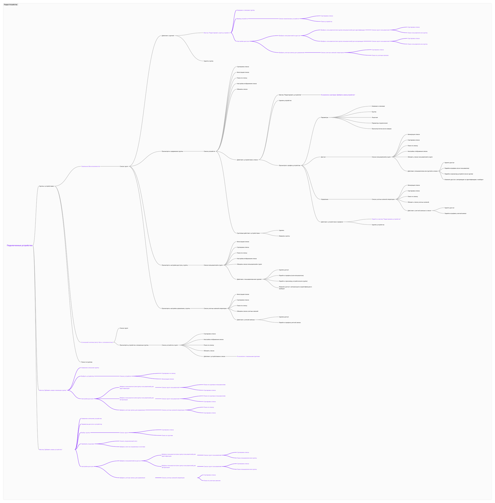 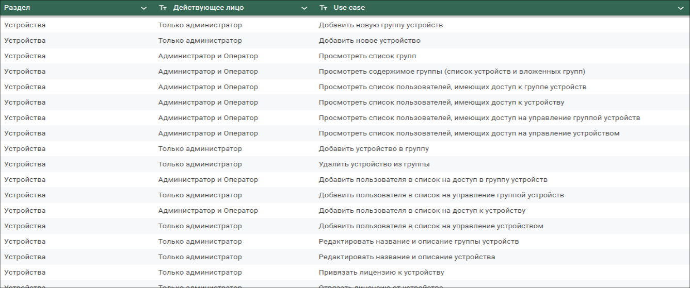
-
Изучила конкурентов. Моей целью было изучить каким образом в системах конкурентов реализуются пользовательские сценарии моего продукта. Некоторые системы удалось установить на компьютер и получить собственный пользовательский опыт. С другими же я познакомилась только по документации. Мне не удалось получить к ним пробный доступ.
Аналитикой пользователей на этом проекте я не занималась. Проджект-менеджер достаточно хорошо исследовал своих клиентов. И все, что было необходимо, мне рассказывал менеджер.
Концептуальный макет¶
После этапа с подготовкой я приступила к проектированию концептуального макета.
-
Навигация.
В моем представлении навигация системы должна была состоять из двух уровней.
-
Первый уровень - выбор раздела.
Предполагались 4 раздела - Устройства, Пользователи, Администрирование и Мониторинг.
Устройства и Пользователи объединяются в группы. Группы могут быть вложенными. А значит нам нужен удобный второй уровень навигации, в котором пользователь сможет выбрать группу.
На предварительных обсуждениях ЛПР ссылался на систему конкурента, в которой навигация первого уровня вынесена в верхнюю панель. При проектировании я учла этот факт. И подготовила первый вариант с навигацией, размещенной в верхней панели, а также в качестве альтернативы - второй вариант с навигацией в левой панели.
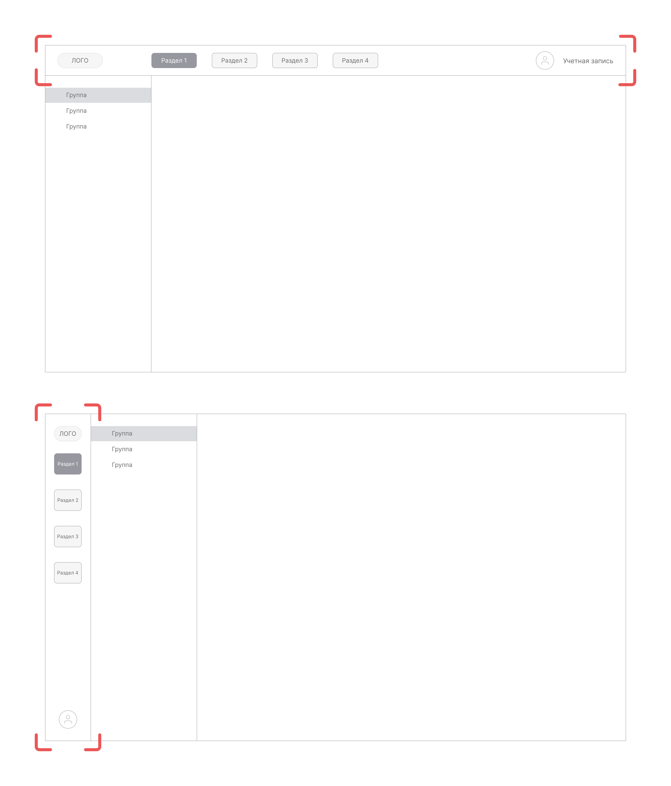
-
Второй уровень - выбор группы.
По функциональным требованиям в системе могут отображаться группы, которые были созданы локально, и группы, полученные из внешних систем.
У меня было несколько идей по проектированию групп, но поскольку не было возможности и времени проводить исследования, мы с проджект-менеджером решили заимствовать опыт конкурентов. Навигацию второго уровня мы разместили в левой панели. Локальные и внешние группы разбили на два отдельных иерархических дерева.
Далее мы рассматривали несколько вариантов размещения глобального поиска и кнопки для добавления новых сущностей.
Я подготовила 2 варианта:
- вынести поиск на верхнюю панель, а кнопку "Добавить" разместить в боковой панели на панели,
- оставить поиск и кнопку "Добавить" в левой панели.
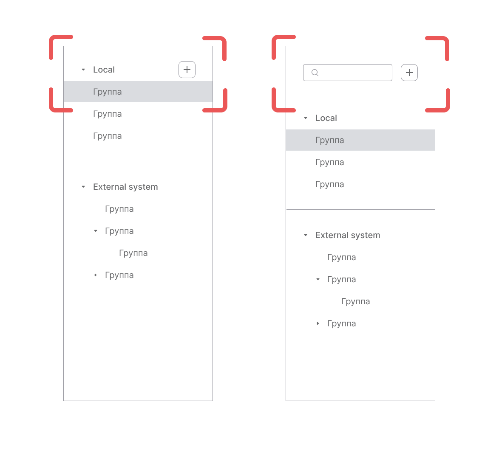
Для того, чтобы пользователь понимал, где находится, мы добавили компонент с хлебными крошками перед табличной частью.
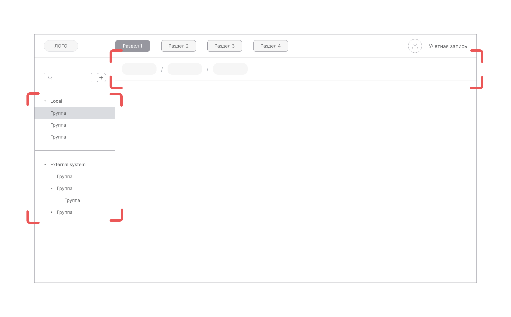
-
-
Таблицы.
Устройства и пользователи, сохраненные в группах, должны быть выведены в интерфейс в виде таблиц.
На этапе концептуального макета я не углублялась в проработку представления данных. Эта работа перенесена на следующий этап.
На данном этапе моей задачей было определить основные требования к таблицам. По всем вопросам я контектировала с проджект-менеджером.
-
Размещение. На экране должна отображаться одна таблица, которая занимает 100% доступной ширины экрана.
-
Фильтрация. Я рассматривала 3 варианта размещения фильтрации:
- в шапке таблицы (по аналогии с таблицами Excel),
- вызывать панель с фильтрами по кнопке (по аналогии компонентом “Table” из библиотеки Material UI v6),
- на отдельной панели над шапкой таблицы.
В результате мы остановились на последнем варианте.
-
Поиск. По требованиям поиск должен работать по одному атрибуту - “Название”. Поэтому для поиска я выбрала стандартный компонент в виде инпута.
-
Пагинация или бесконечная прокрутка? К решению этого вопросам был привлечен тимлид команды разработки. В результате мы остановились на “бесконечной прокрутке”.
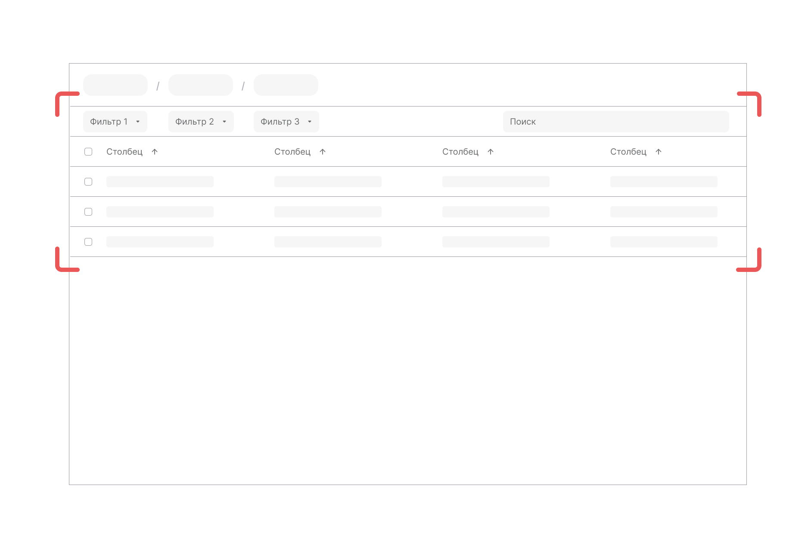
-
-
Форма просмотра объекта.
Для просмотра профиля устройства или пользователя нужно было предусмотреть отдельный интерфейс.
Я рассматривала несколько вариантов - модальное окно или переход на новую страницу. Поскольку в профиле предусматривались различные сценарии взаимодействия, которые потребуют вызова других интерфейсов, я остановилась на варианте с переходом на новую страницу.
-
Форма создания объекта.
По требованиям система должна предоставить возможность подключить новое устройство, создать нового пользователя и новую группу. Поля формы можно было разбить на несколько логических блоков. Это позволило представить форму в виде пошагового мастера. По аналогии с формой просмотра я решила выводить этот мастер с переходом на новую страницу.
Первая итерация согласований¶
Далее я вышла на согласование концептуального макета с командой.
Не буду останавливаться на описании этого этапа. С ним не возникло сложностей. Все мои предложения были приняты ЛПР. Что касается навигации, решено было остановиться на первом варианте с размещением навигации в верхней панели, а поиск и кнопку "Добавить" оставить в левой панели.
Дисклеймер. Я не упоминаю про контекстное меню и действия с группами в боковой панели. Я рассматривала эту функциональность, но для первой версии системы было решено от нее отказаться.
UI-kit¶
В качестве визуального ориентира ЛПР обозначил посадку старой версии продукта. На этом этапе я собрала локальный UI-kit для светлой темы.
Стоит отметить, что у меня не было задачи прорабатывать полноценную дизайн-систему.
Проработка таблиц¶
На этом этапе я прорабатывала представление данных в таблицах и действия с ними.
-
Систематизация данных.
Я систематизировала данные объектов, которые должна содержать таблица, и действия, которые пользователь может совершить. Далее вместе с проджект-менеджером мы проговорили структуру таблицы.

-
Адаптивность.
Напомню, что в данном проекте не предусматривалась верстка для мобильных устройств. На этапе с концептуальным макетом я выяснила, что таблица должна занимать 100% доступной ширины. Мы отказались от фиксированной ширины ячеек. Ячейки должны равномерно распределяться на экране. Текст в них должен отображаться без обрезания (если возможно) и переноса.
-
Ячейки.
На этом шаге я прорабатывала внешний вид ячеек и подготавливала для них компоненты в макете.
-
Строки.
На этом шаге я собрала компоненты для строк и проверяла гипотезу с “зеброй”. В некоторых гайдах по проектированию таблиц рекомендуют использовать чередующуюся заливку строк в виде “зебры”, чтобы сделать информацию лучше читаемой. Мы проговорили эту гипотезу с проджектом и в конечном итоге отбросили. В нашем случае “зебра” скорее отвлекала от чтения таблицы.
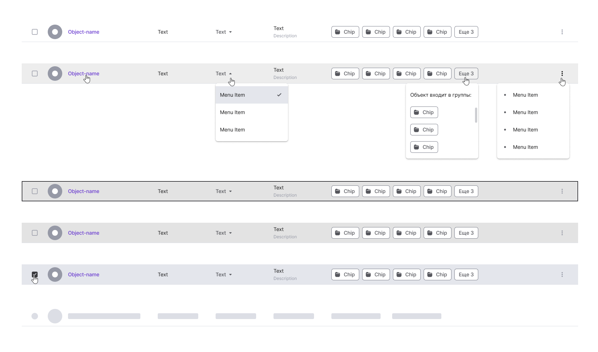
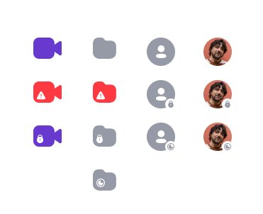
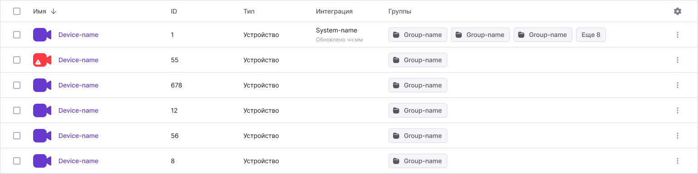
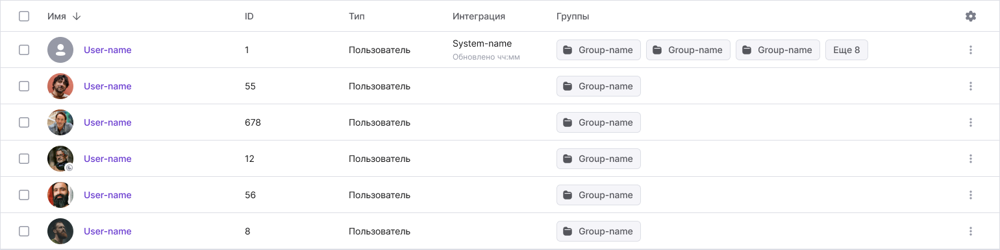
-
Столбцы.
Было решено отказаться от регулятора ширины столбцов. Для упрощения просмотра мы добавили настройку отображения столбцов.
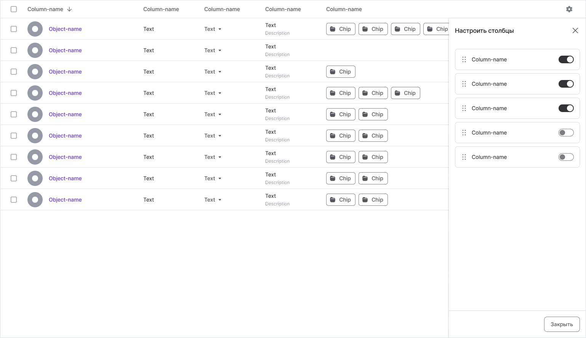
-
Действия с элементами списка.
-
Одиночные действия вынесли в виде привычной кнопки-иконки “Три точки”, при клике на которую открывается выпадающее меню с действиями.
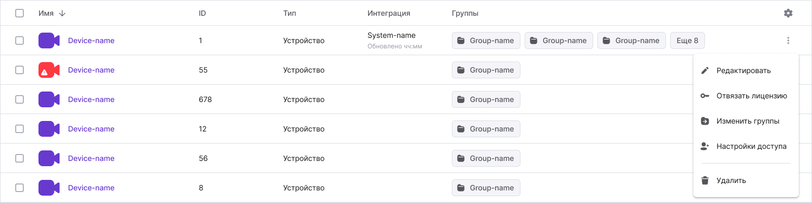
-
Групповые действия. Я выяснила, что пользователи редко обращаются к сценариям с групповыми действиями. Кроме того, групповые действия доступны не всем ролям в системе. Поэтому я предложила вызывать кнопки действий при проставлении отметки чекбоксом. А для ролей, для которых эти действия недоступны, чекбоксы скрыть из интерфейса.
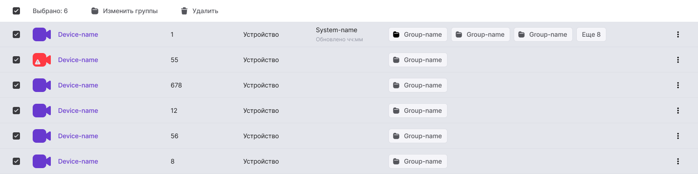
-
Проработка форм для создания объектов¶
Еще на этапе с концептуальным макетом мы определились, что форма будет разбита на глобальные логические шаги.
-
Форма "Добавление устройства":
Шаг 1: Параметры подключения,
Шаг 2: Настройки устройства,
Шаг 3: Настройки доступа.
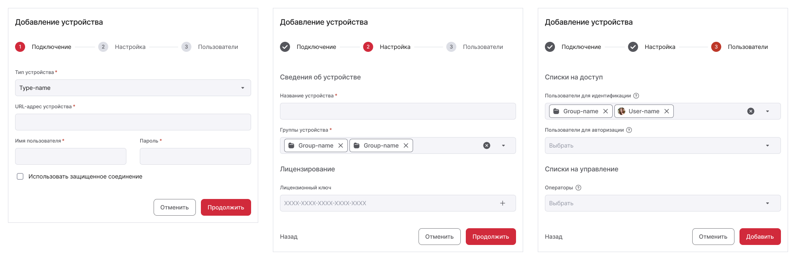
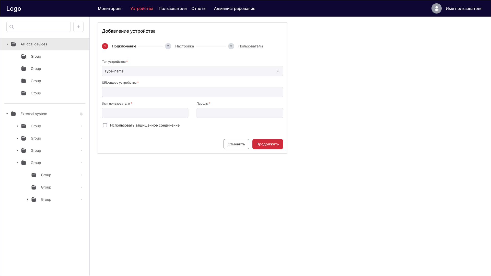
-
Форма "Создание группы устройств":
Шаг 1: Сведения о группе,
Шаг 2: Настройки доступа.
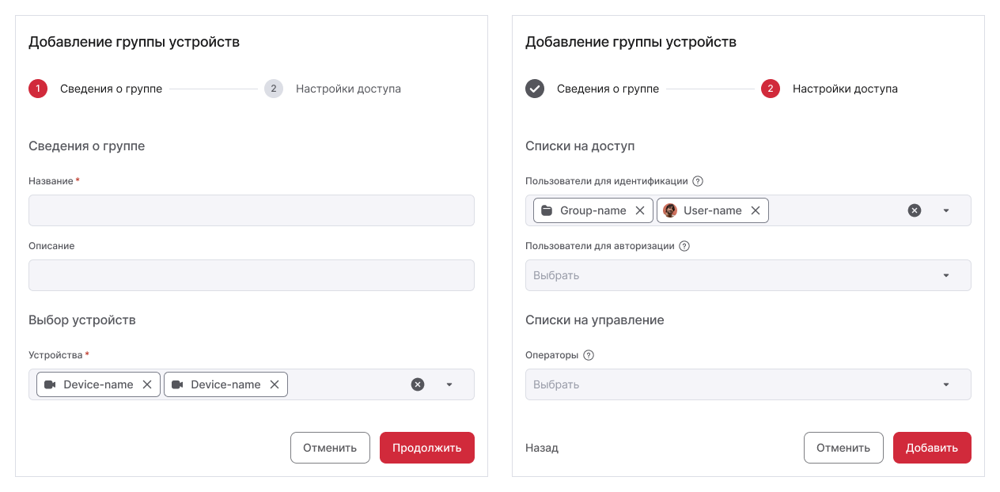
-
Форма "Создание пользователя":
Шаг 1: Сведения о пользователе,
Шаг 2: Настройки доступа.
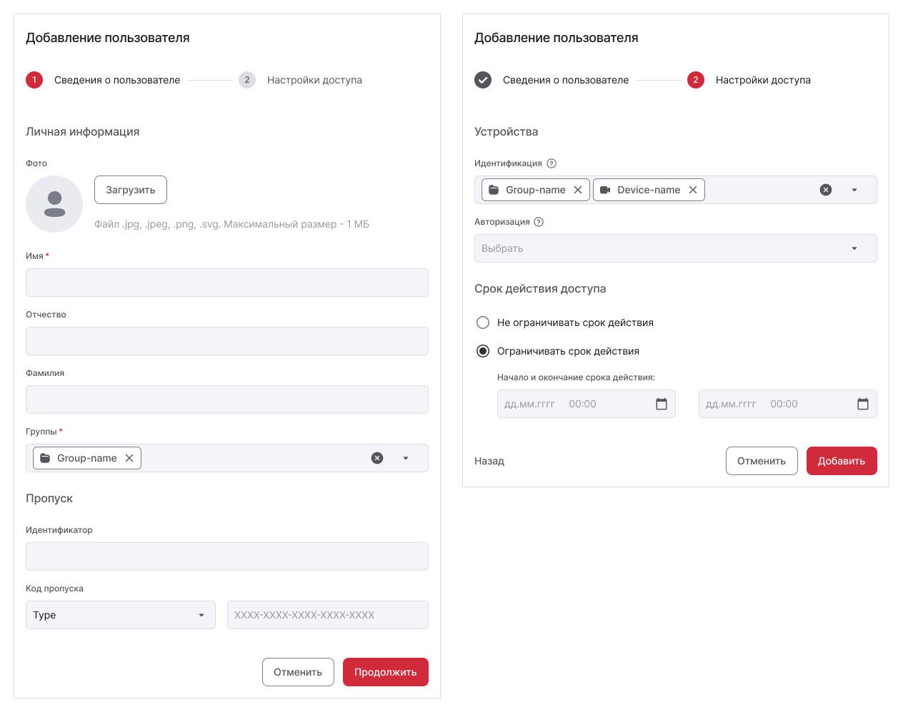
-
Форма "Создание группы пользователей":
Шаг 1: Сведения о группе,
Шаг 2: Список пользователей.
В каждой форме я предусмотрела вызов вложенных форм в виде модальных окон. Внешний вид модальных я привела к одному шаблону.
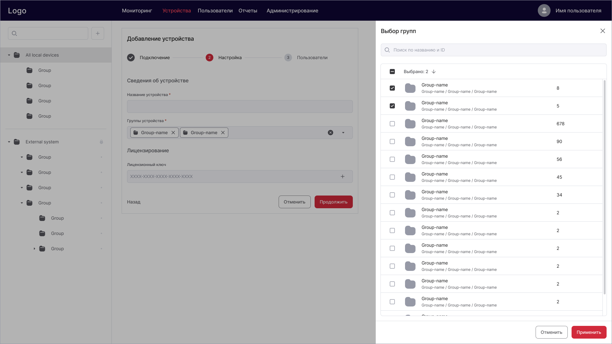
Проработка форм для просмотра объектов¶
Формы просмотра требуются для просмотра профиля устройства и пользователя.
По требованиям в форме просмотра устройства пользователь должен иметь возможность просмотреть назначенные списки пользователей. И наоборот в форме просмотра пользователя пользователь должен иметь возможность просмотреть назначенные списки устройств.
Я разбила форму на 2 вкладки:
-
Вкладка со сведениями объекта.
-
Для устройств:
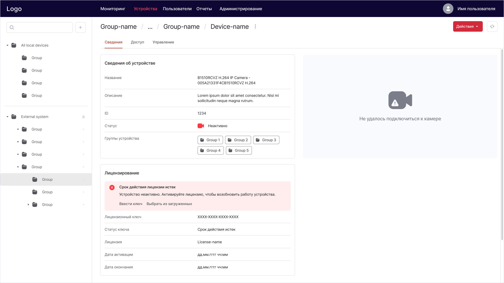
-
Для пользователей:
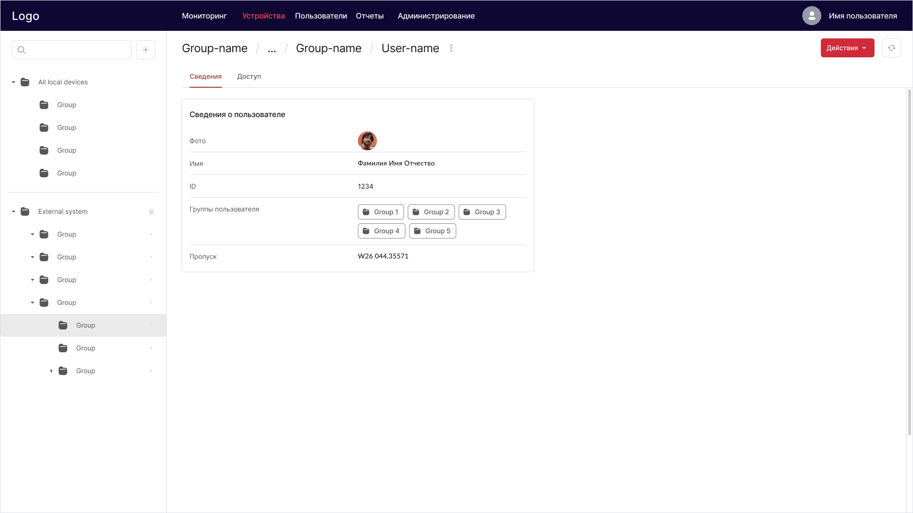
-
-
Вкладка с назначенными списками:
- Для устройств - это списки пользователей, которые имеют доступ к устройству,
-
Для пользователей - это списки устройств, к которым пользователь имеет доступ.
Для вывода списков я использовала таблицы, которые были спроектированы ранее.
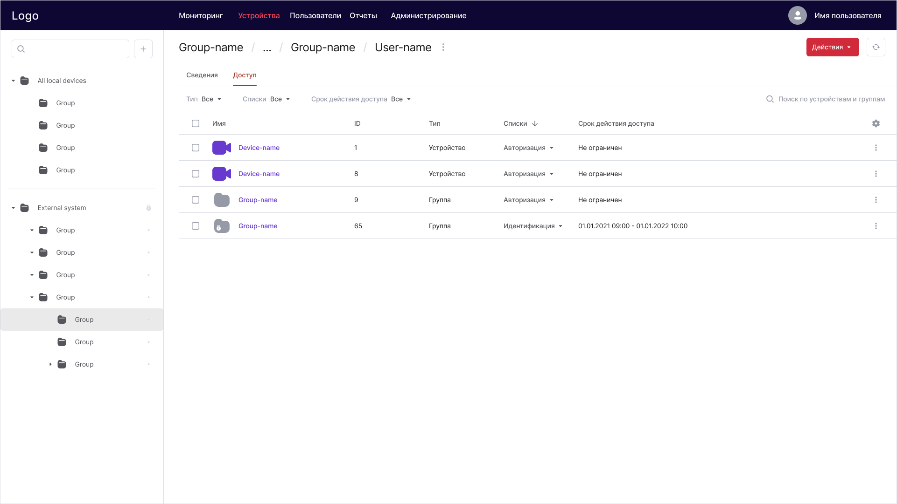
Вторая итерация согласований¶
К этому этапу я подготовила основные экраны приложения и запрототипировала основные пользовательские сценарии.
Я провела демонстрацию команде и получила обратную связь от ЛПР. Требовалось доработать error-состояния, интерфейсные тексты и пустые состояния.
В конечном итоге ЛПР принял работу и первая часть интерфейса отправилась в реализацию.
А дальше мне предстояла работа с разделами “Отчеты”, “Администрирование” и “Мониторинг”.
Назад из будущего¶
На начало 2022 года система успешно прошла все тесты и была внедрена на предприятии клиента. К системе были подключены терминалы доступа с поддержкой технологии распознавания лиц и обнаружением людей с повышенной температурой тела.